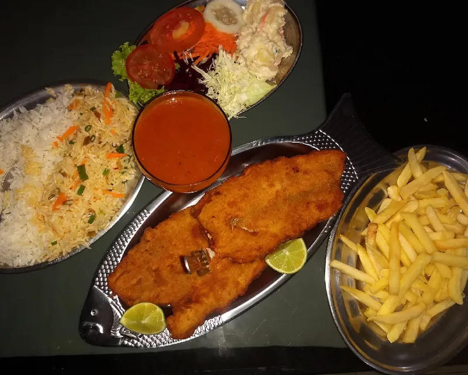

Destaque da casa
Peixe à Milanesa
Filé empanado, sequinho e dourado por fora, macio por dentro, servido com limão. Na foto, acompanhado de arroz soltinho, salada, batata frita e molho. [CONFIRMAR acompanhamentos]
Lanches e jantas feitos com carinho, porção caprichada e preço justo. Venha comer no local, leve para viagem ou peça com entrega sem contato.
Ao clicar em ligar ou WhatsApp, o contato acontece pelo canal escolhido e está sujeito às políticas da sua operadora ou do aplicativo. Privacidade.

A opinião de quem já sentou à nossa mesa é o nosso melhor cartão de visitas.
[PREENCHER depoimento autorizado]
[PREENCHER depoimento autorizado]
Pratos feitos na hora, com aquele tempero de casa. Confira alguns favoritos e veja o cardápio completo.
Filé empanado, sequinho e dourado por fora, macio por dentro, servido com limão. Na foto, acompanhado de arroz soltinho, salada, batata frita e molho. [CONFIRMAR acompanhamentos]
[PREENCHER descrição curta]
[PREENCHER descrição curta]
[PREENCHER descrição curta]
[PREENCHER descrição curta]
Sente com a família, passe para buscar ou receba em casa. A comida é a mesma: quentinha e bem servida.
Ambiente simples e acolhedor, com atendimento familiar. É só chegar e escolher.
Ligue, faça o pedido e passe para retirar. Embalado com cuidado para chegar inteirinho.
Peça pelo telefone e receba no seu endereço, sem contato. [PREENCHER área/bairros de entrega]
O contato é feito pelo canal que você escolher (telefone ou WhatsApp) e segue as políticas da operadora ou do aplicativo.
Prato bem servido e preço justo. Você sai satisfeito sem pesar no bolso.
Comida bem temperada, arroz soltinho e salada caprichada, do jeito que se faz em casa.
Aqui você é recebido como de casa, com atenção e simpatia em cada pedido.
Bateu a fome depois do expediente, do jogo ou da festa? Atendemos até as 4h da manhã.
| Segunda | [PREENCHER] |
|---|---|
| Terça | [PREENCHER] |
| Quarta | [PREENCHER] |
| Quinta | [PREENCHER] |
| Sexta | [PREENCHER] |
| Sábado | [PREENCHER] |
| Domingo | [PREENCHER] |
Para proteger sua privacidade, o mapa só é carregado com a sua permissão. Ao carregar, o Google poderá coletar dados de navegação e gravar cookies, conforme a política dele.
Ligue agora e peça seu lanche ou prato favorito. Pra comer aqui, levar ou receber em casa, até as 4h da manhã.
O contato acontece pelo canal escolhido e segue as políticas da operadora ou do aplicativo.